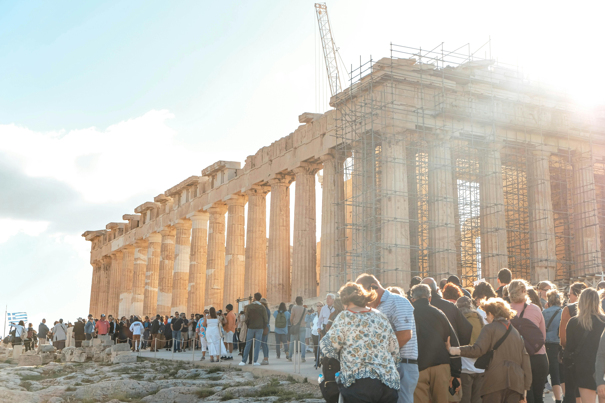
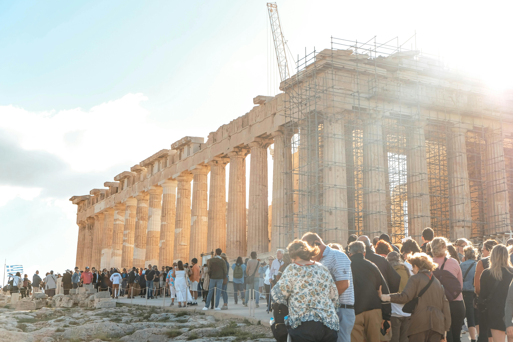

Κεφάλαιο 1: Ιστορία της Ακρόπολης
Η Ακρόπολη είναι ένας αρχαιολογικός θησαυρός που βρίσκεται στην καρδιά της Αθηναϊκής πόλης. Έχει μια ιστορία που εκτείνεται περίπου 2.500 χρόνια πίσω στην αρχαία Ελλάδα. Η Ακρόπολη ξεκίνησε να αναπτύσσεται στον 5ο αιώνα π.Χ. και χρησιμοποιήθηκε ως θρησκευτικό, πολιτικό και πολιτιστικό κέντρο της αρχαίας Αθήνας. Αποτελείται από πολλά αρχαία κτίρια, συμπεριλαμβανομένου του Παρθενώνα, του Ερεχθείου και του ναού της Αθηνάς Νίκης.
1.1: Η προέλευση της Ακρόπολης
Η λέξη "Ακρόπολη" προέρχεται από τις ελληνικές λέξεις "άκρη" και "πόλη", που σημαίνει "υψηλή πόλη". Η Ακρόπολη ήταν το πιο ψηλό σημείο της Αθήνας, και εκεί οι Αθηναίοι έχτισαν τους πιο σημαντικούς ναούς τους.
Κεφάλαιο 2: Αρχιτεκτονικά θαύματα
Η Ακρόπολη είναι γνωστή για την εκθαμβωτική αρχιτεκτονική των ναών και των αρχαίων κτιρίων της. Ο Παρθενώνας, για παράδειγμα, είναι ένα από τα πιο καλλιτεχνικά κτίρια της αρχαιότητας, με τις ιωνικές και δωρικές στήλες του να αποπνέουν μεγαλοπρέπεια και αισθητική. Οι Αθηναίοι ήταν γνωστοί για την αγάπη τους για την αρχιτεκτονική και την τέχνη, και η Ακρόπολη είναι ένα εξαιρετικό παράδειγμα αυτής της πολιτιστικής πλούσιας κληρονομιάς.


2.1: Ο Παρθενώνας
Ο Παρθενώνας είναι ο πιο διάσημος ναός στην Ακρόπολη και αποτελεί ένα εξαιρετικό παράδειγμα της δωρικής αρχιτεκτονικής. Χτισμένος περίπου το 447-432 π.Χ., αφιερώθηκε στην Αθηνά Παρθένο και χρησιμοποιήθηκε για την αποθήκευση της πολιτικής και θρησκευτικής πλούτου της πόλης. Οι ακριβείς αναλογίες του και η τελειότητα στην κατασκευή του το καθιστούν ένα από τα πιο αναγνωρίσιμα κτίρια στον κόσμο.
2.2: Το Ερέχθειο
Το Ερέχθειο είναι ένας άλλος σημαντικός ναός στην Ακρόπολη, γνωστός για τις περίφημες Κόρες του, που είναι οι γλυπτές στήλες που στηρίζουν το στέγαστρο του ναού. Χτίστηκε προς τιμήν του θεού Ποσειδώνα και της θεάς Αθηνάς, και η αρχιτεκτονική του με τις ανισοσκελείς κολώνες είναι μοναδική.
Κεφάλαιο 3: Σημασία και σύγχρονη σημασία
Η Ακρόπολη δεν είναι απλώς ένας αρχαιολογικός τόπος αλλά και ένα σύμβολο της ελληνικής πολιτιστικής ταυτότητας. Σήμερα, είναι ένας από τους πιο δημοφιλείς προορισμούς για επισκέπτες από όλο τον κόσμο, προσελκύοντας ανθρώπους που ενδιαφέρονται να μάθουν για την αρχαία ιστορία της Αθήνας και να ανακαλύψουν την πλούσια κληρονομιά της περιοχής.
 
3.1: Επισκεψιμότητα και προστασία
Η Ακρόπολη είναι ανοιχτή για το κοινό και δέχεται εκατομμύρια επισκέπτες κάθε χρόνο. Η προστασία της και η διατήρηση των κτιρίων της είναι υψίστης σημασίας για την Ελλάδα και διεθνείς οργανισμούς, όπως η UNESCO, που έχει κατατάξει την Ακρόπολη ως Μνημείο Παγκόσμιας Κληρονομιάς.
3.2: Πολιτιστικές εκδηλώσεις
Η Ακρόπολη συχνά φιλοξενεί πολιτιστικές εκδηλώσεις, όπως θεατρικές παραστάσεις και συναυλίες, που προσφέρουν στους επισκέπτες τη δυνατότητα να απολαύσουν τον πολιτισμό σε έναν από τους πιο ιστορικούς τόπους του κόσμου. Αυτές οι εκδηλώσεις ενισχύουν την κατανόηση και την εκτίμηση της ελληνικής κληρονομιάς.